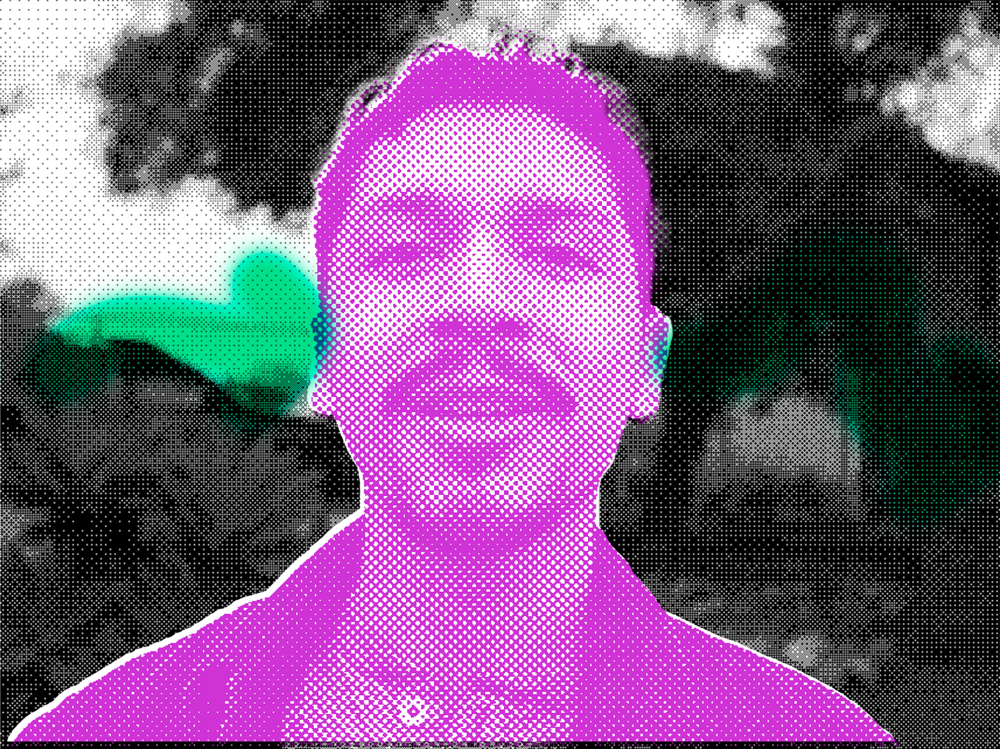

The textures and rhythms of the everyday inspire me to reimagine them in different ways and create new meanings. I am intrigued by the cycles of life, how the mind and body processes transitions, and where moments of connection lie in all of this. Jesús Balandrano Ramírez is an artist, producer, and MFT/Art Therapy trainee based in Los Angeles, CA. He received his BA’s in Art and Sociology from UC Santa Barbara, and is currently pursuing a MA in Marital and Family Therapy with a Specialization in Art Therapy from Loyola Marymount University.
Los Angeles, California
